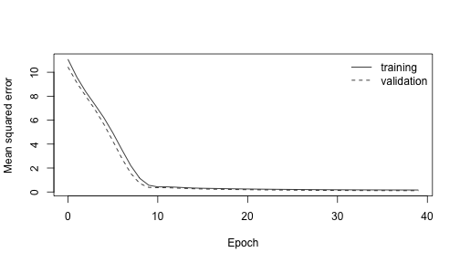

Most of what TensorFlow writes to disk is Protocol Buffers:
- a SavedModel (
saved_model.pb) is aSavedModelmessage, holding the model’s graph (GraphDef) and its signatures; - a TFRecord file is a sequence of records, usually
each a
tf.train.Example, the format of many training data sets; - a TensorBoard log
(
events.out.tfevents.*) is a TFRecord file ofEventmessages: every loss and metric logged during training.
zuproto reads all three with TensorFlow’s schemas and nothing else: no Python and no TensorFlow installation. This article opens one of each.
The output below comes from a run on 27 October 2026. The code is not run when the site is built.
The schemas
TensorFlow’s .proto files are spread over its repository
and import each other. This helper downloads the files a few top-level
schemas need, following their imports, at one TensorFlow release. The
schemas of the well-known types (google/protobuf/...) are
built into every pool.
fetch_protos <- function(files, dir, ref = "v2.16.2") {
base <- paste0(
"https://raw.githubusercontent.com/tensorflow/tensorflow/",
ref,
"/"
)
# TSL's and XLA's schemas live under third_party/ in the repository.
repo_path <- function(f) {
if (startsWith(f, "tsl/")) {
paste0("third_party/xla/third_party/tsl/", f)
} else if (startsWith(f, "xla/")) {
paste0("third_party/xla/", f)
} else {
f
}
}
todo <- files
done <- character()
while (length(todo) > 0) {
f <- todo[[1]]
todo <- todo[-1]
if (f %in% done || startsWith(f, "google/protobuf/")) {
next
}
dest <- file.path(dir, f)
dir.create(dirname(dest), recursive = TRUE, showWarnings = FALSE)
download.file(paste0(base, repo_path(f)), dest, quiet = TRUE)
imports <- grep("^import ", readLines(dest), value = TRUE)
todo <- c(todo, sub('^import (public )?"(.*)";.*$', "\\2", imports))
done <- c(done, f)
}
done
}
dir <- tempfile("tensorflow-")
protos <- fetch_protos(
c(
"tensorflow/core/protobuf/saved_model.proto",
"tensorflow/core/example/example.proto",
"tensorflow/core/util/event.proto"
),
file.path(dir, "protos")
)
length(protos)
#> [1] 24protoc, the protobuf compiler, turns the 24 files into
one descriptor set. zuproto itself does not need protoc: on
macOS, brew install protobuf; on Debian and Ubuntu,
apt install protobuf-compiler.
A SavedModel
TensorFlow’s own tests use a tiny SavedModel,
half_plus_two, that computes y = 0.5 * x + 2.
Its saved_model.pb is 10 kB.
saved <- file.path(dir, "saved_model.pb")
download.file(
paste0(
"https://raw.githubusercontent.com/tensorflow/tensorflow/v2.16.2/",
"tensorflow/cc/saved_model/testdata/half_plus_two/00000123/",
"saved_model.pb"
),
saved,
mode = "wb",
quiet = TRUE
)
sm <- proto_decode(saved, "tensorflow.SavedModel", pool, defaults = FALSE)
mg <- sm$meta_graphs[[1]]
str(mg$meta_info_def[c("tags", "tensorflow_version")])
#> List of 2
#> $ tags : chr "serve"
#> $ tensorflow_version: chr "1.1.0-rc2"The signatures are the model’s entry points, the ones TensorFlow Serving exposes. A map field decodes to a named list.
signatures <- mg$signature_def
data.frame(
name = names(signatures),
method = vapply(signatures, \(s) s$method_name, ""),
inputs = vapply(signatures, \(s) paste(names(s$inputs), collapse = ", "), ""),
row.names = NULL
)
#> name method inputs
#> 1 classify_x2_to_y3 tensorflow/serving/classify inputs
#> 2 classify_x_to_y tensorflow/serving/classify inputs
#> 3 regress_x2_to_y3 tensorflow/serving/regress inputs
#> 4 regress_x_to_y tensorflow/serving/regress inputs
#> 5 regress_x_to_y2 tensorflow/serving/regress inputs
#> 6 serving_default tensorflow/serving/predict xThe graph is a GraphDef, the same message a frozen
.pb graph file holds. Its 65 nodes are mostly the machinery
for saving and restoring variables; counting the operators shows it.
nodes <- mg$graph_def$node
sort(table(vapply(nodes, \(n) n$op, "")), decreasing = TRUE)
#>
#> Const Assign Identity NoOp
#> 24 8 8 4
#> VariableV2 Add Mul RestoreV2
#> 4 3 3 3
#> MergeV2Checkpoints Pack ParseExample Placeholder
#> 1 1 1 1
#> Reshape SaveV2 ShardedFilename StringJoin
#> 1 1 1 1The model’s numbers are the initial values of its variables, constant
tensors in the graph: a and b give
0.5 * x + 2, and the signatures ending in y3
add c instead of b. The dtype
enum decodes to a factor.
consts <- Filter(\(n) grepl("initial_value$", n$name), nodes)
data.frame(
node = vapply(consts, \(n) n$name, ""),
dtype = vapply(consts, \(n) as.character(n$attr$dtype$type), "")
)
#> node dtype
#> 1 a/initial_value DT_FLOAT
#> 2 b/initial_value DT_FLOAT
#> 3 c/initial_value DT_FLOAT
#> 4 filename_tensor/initial_value DT_STRING
floats <- Filter(\(n) n$attr$dtype$type == "DT_FLOAT", consts)
vapply(floats, \(n) n$attr$value$tensor$float_val, 0)
#> [1] 0.5 2.0 3.0Writing the other files
A TFRecord data set and a TensorBoard log come from running
TensorFlow, so these were written by this Python script, from R’s
faithful data set
(write.csv(faithful, "faithful.csv", row.names = FALSE)).
It stores each eruption as a tf.train.Example, then fits a
small Keras model to predict an eruption’s length from the waiting time
before it, logging to TensorBoard.
import os, sys
import numpy as np
import tensorflow as tf
out = sys.argv[1]
os.makedirs(out, exist_ok=True)
data = np.genfromtxt(sys.argv[2], delimiter=",", skip_header=1)
eruption, waiting = data[:, 0], data[:, 1]
kind = np.where(eruption > 3, "long", "short")
with tf.io.TFRecordWriter(os.path.join(out, "eruptions.tfrecord")) as w:
for i in range(len(waiting)):
feature = {
"waiting": tf.train.Feature(
int64_list=tf.train.Int64List(value=[int(waiting[i])])),
"eruption": tf.train.Feature(
float_list=tf.train.FloatList(value=[eruption[i]])),
"kind": tf.train.Feature(
bytes_list=tf.train.BytesList(value=[kind[i].encode()])),
}
ex = tf.train.Example(features=tf.train.Features(feature=feature))
w.write(ex.SerializeToString())
tf.keras.utils.set_random_seed(1)
x = (waiting - waiting.mean()) / waiting.std()
model = tf.keras.Sequential([
tf.keras.Input((1,)),
tf.keras.layers.Dense(8, activation="relu"),
tf.keras.layers.Dense(1),
])
model.compile(optimizer=tf.keras.optimizers.Adam(0.01), loss="mse",
metrics=["mae"])
model.fit(x, eruption, epochs=40, validation_split=0.2, verbose=0,
callbacks=[tf.keras.callbacks.TensorBoard(os.path.join(out, "logs"))])
files <- "tf-files" # the script's output directoryTFRecord files
A TFRecord file is not delimited the way
proto_read_delimited() expects. Each record is its length
as an 8-byte little-endian integer, a checksum of that length, the
bytes, and a checksum of the bytes. Reading one takes a few lines of
base R; this helper skips the CRC32C checksums rather than verifying
them.
read_tfrecord <- function(path) {
con <- file(path, "rb")
on.exit(close(con))
records <- list()
repeat {
len <- readBin(con, "raw", 8)
if (length(len) == 0) {
break
}
n <- sum(as.numeric(len) * 256^(0:7))
readBin(con, "raw", 4) # CRC of the length
records[[length(records) + 1]] <- readBin(con, "raw", n)
readBin(con, "raw", 4) # CRC of the data
}
records
}
records <- read_tfrecord(file.path(files, "eruptions.tfrecord"))
length(records)
#> [1] 272Each record is a tensorflow.Example.
proto_decode_df() decodes them all at once; an
Example keeps its values in a map of Features,
each a list of bytes, floats or integers, so one more step makes columns
of them.
ex <- proto_decode_df(records, "tensorflow.Example", pool)
features <- ex$features$feature
str(features[[1]])
#> List of 3
#> $ eruption:List of 1
#> ..$ float_list:List of 1
#> .. ..$ value: num 3.6
#> $ kind :List of 1
#> ..$ bytes_list:List of 1
#> .. ..$ value:List of 1
#> .. .. ..$ : raw [1:4] 6c 6f 6e 67
#> $ waiting :List of 1
#> ..$ int64_list:List of 1
#> .. ..$ value: num 79
feature <- function(name) {
vapply(features, \(f) {
v <- f[[name]][[1]]$value
if (is.list(v)) rawToChar(v[[1]]) else as.character(v)
}, "")
}
eruptions <- data.frame(
eruption = as.numeric(feature("eruption")),
waiting = as.integer(feature("waiting")),
kind = feature("kind")
)
head(eruptions)
#> eruption waiting kind
#> 1 3.600 79 long
#> 2 1.800 54 short
#> 3 3.333 74 long
#> 4 2.283 62 short
#> 5 4.533 85 long
#> 6 2.883 55 shorteruption was written as a 32-bit float, so it comes back
as the nearest float to each value in faithful, not the
value itself.
all.equal(eruptions$eruption, faithful$eruptions, tolerance = 1e-6)
#> [1] TRUETensorBoard logs
Keras writes one log for training and one for validation. Each is a
TFRecord file of tensorflow.Events: a header, the model’s
configuration, then one event per metric per epoch.
logs <- list.files(
file.path(files, "logs"),
pattern = "tfevents",
recursive = TRUE,
full.names = TRUE
)
basename(dirname(logs))
#> [1] "train" "validation"
events <- read_tfrecord(logs[[1]])
str(proto_decode(events[[3]], "tensorflow.Event", pool, defaults = FALSE))
#> List of 2
#> $ wall_time: num 1.79e+09
#> $ summary :List of 1
#> ..$ value:List of 1
#> .. ..$ :List of 3
#> .. .. ..$ tag : chr "epoch_loss"
#> .. .. ..$ metadata:List of 1
#> .. .. .. ..$ plugin_data:List of 1
#> .. .. .. .. ..$ plugin_name: chr "scalars"
#> .. .. ..$ tensor :List of 3
#> .. .. .. ..$ dtype : Factor w/ 55 levels "DT_INVALID","DT_FLOAT",..: 2
#> .. .. .. ..$ tensor_shape : Named list()
#> .. .. .. ..$ tensor_content: raw [1:4] d3 75 31 41A scalar is a tensor of one 32-bit float, stored as four
little-endian bytes in tensor_content. This turns a log
into a table of step, metric and value.
read_scalars <- function(path) {
rows <- lapply(read_tfrecord(path), \(r) {
e <- proto_decode(r, "tensorflow.Event", pool)
values <- Filter(
\(v) identical(as.character(v$tensor$dtype), "DT_FLOAT"),
e$summary$value
)
lapply(values, \(v) data.frame(
step = e$step,
tag = v$tag,
value = readBin(v$tensor$tensor_content, "double", size = 4, endian = "little")
))
})
do.call(rbind, unlist(rows, recursive = FALSE))
}
scalars <- do.call(rbind, lapply(logs, \(path) {
cbind(run = basename(dirname(path)), read_scalars(path))
}))
table(scalars$run, scalars$tag)
#>
#> epoch_learning_rate epoch_loss epoch_mae
#> train 40 40 40
#> validation 0 40 40
#>
#> evaluation_loss_vs_iterations evaluation_mae_vs_iterations
#> train 0 0
#> validation 40 40That is TensorBoard’s loss curve, as a data frame.
loss <- scalars[scalars$tag == "epoch_loss", ]
train <- loss[loss$run == "train", ]
valid <- loss[loss$run == "validation", ]
plot(
train$step,
train$value,
type = "l",
ylim = range(loss$value),
xlab = "Epoch",
ylab = "Mean squared error"
)
lines(valid$step, valid$value, lty = 2)
legend("topright", c("training", "validation"), lty = 1:2, bty = "n")
plot of chunk loss